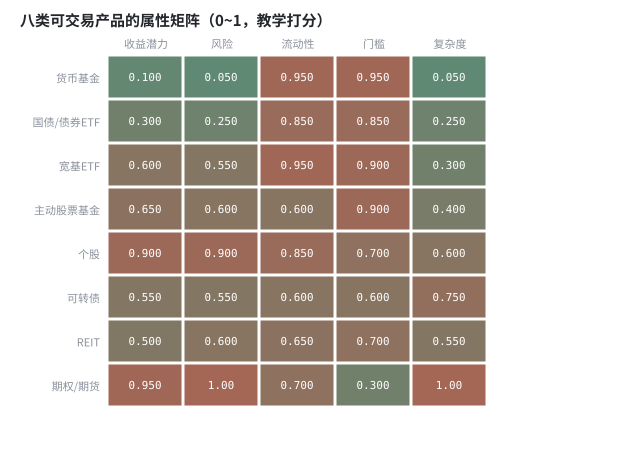
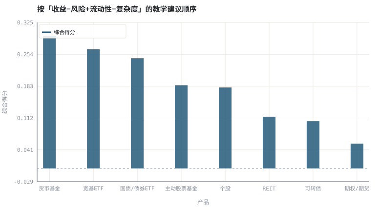

第 03 章交易 App 里的产品全景图
把富途、东方财富一类零售界面里的几十个入口，抽象成一张按「现金流权利」分类的产品表。
本章位置：从本章起进入第一阶段的产品地图。第 04 章 · 交易所制度：竞价、涨跌停、T+1 与交收 讲这些接口在什么规则下被调用，第 06 章 · 行情数据模型：OHLCV、复权与时间戳 讲它们返回的数据长什么样。
产品是一组接口：股票暴露 dividend() 与投票权，债券暴露 coupon() 与到期日，基金暴露 nav()，期权暴露 payoff(S_T)。App 只是同一批接口的不同前端皮肤。
- 能按「索取权」而非按 App 栏目给可交易产品分类。
- 能说清股票、基金、ETF、债券、可转债、期权、期货、REIT 的收益来源与主要风险。
- 能读懂交易界面的共同字段：代码、最小单位、报价币种、交易时段、费用、风险等级。
- 能用一张热力图比较产品属性并给出适合新手的顺序。
§知识点地图
每个知识点都配了 1～2 个扩展学习链接；本章完整资源清单见 扩展学习。
| # | 知识点 | 扩展学习 | 状态 |
|---|---|---|---|
| 1 | 交易 App 的产品分类 | TradingView · 富途牛牛 / 富途证券 | 正文已覆盖 |
| 2 | 股票与股权 | Stock · Stock valuation | 正文已覆盖 |
| 3 | 公募基金与净值 | Mutual fund · Net asset value | 正文已覆盖 |
| 4 | ETF 与场内交易 | Exchange-traded fund · Index fund | 正文已覆盖 |
| 5 | 债券与可转债 | Bond (finance) · Bond duration | 正文已覆盖 |
| 6 | 期权与期货 | Option (finance) · Put–call parity | 正文已覆盖 |
| 7 | REIT 与货币基金 | Mutual fund · Net asset value | 正文已覆盖 |
| 8 | 适当性与风险等级 | Modern portfolio theory · Value at risk | 正文已覆盖 |
§3.1按索取权分类，而不是按入口分类
零售 App 的栏目是运营视角：港股、美股、A 股、基金、理财、衍生品。教材需要权利视角：你买到的是剩余索取权、债权、基金份额、还是一份或有合约。同一个权利可以挂在不同市场、不同币种、不同 App 入口下，但风险结构不变。
| 索取权 | 代表产品 | 收益来源 | 最主要的风险 |
|---|---|---|---|
| 剩余索取权 | 普通股、存托凭证、股票型 ETF | 盈利增长 + 估值变化 + 分红 | 经营与估值波动 |
| 债权 | 国债、公司债、债券 ETF、可转债债底 | 票息 + 利率变化 | 利率风险、信用风险 |
| 基金份额 | 场外公募、ETF、货币基金 | 组合净值的按比例分配 | 底层资产 + 费率 + 跟踪误差 |
| 或有权益 | 期权、权证、牛熊证 | 非线性 payoff | 时间价值衰减、杠杆、可能归零 |
| 保证金合约 | 股指期货、商品期货 | 标的涨跌 × 杠杆 | 逐日盯市、强平、无限损失 |
| 不动产份额 | REIT | 租金分派 + 资产重估 | 利率敏感、流动性 |
富途牛牛一类跨境券商常见「港股 / 美股 / ETF / 期权 / 期货 / 牛熊证」入口；东方赢家、东方财富一类境内券商常见「A 股 / 场内基金 / 债券 / 逆回购 / 理财 / 融资融券」。两者字段结构高度相似：代码 · 名称 · 现价 · 涨跌幅 · 买卖档位 · 最小单位 · 币种 · 交易时段 · 费用 · 风险等级。本书只使用这些抽象字段，不评价任何具体平台或产品。
§3.2三层封装：底层资产 → 组合 → 合约
- 第一层：股票、债券、商品、存款等基础资产，有可观测的现金流。
- 第二层：基金 / ETF 把一篮子基础资产封装成一份可申赎或可交易的份额，引入净值、费率、跟踪误差（第 07 章）。
- 第三层：期权、期货、结构性产品把第一/二层再封装成带杠杆、到期日与非线性 payoff 的合约，引入保证金、时间价值与强平（第 12、30 章）。
每多一层封装，就多一组状态与失效模式：第二层多了申赎清单与折溢价，第三层多了 Greek 与保证金。新手应先把第一、二层跑通，再碰第三层。
§3.3适当性：不是限制，而是输入校验
监管与券商的风险等级、资产门槛、知识测评，本质上是对策略参数的输入校验：杠杆产品要求更高的保证金与更强的抗压能力，跨境产品还有汇率与结算差异。把「能不能买」与「该不该买」分开，是第 31 章 IPS 的前置条件。
§Python 分析实例
实验 3-1 · 产品属性矩阵与上手顺序打分
#!/usr/bin/env python3
# -*- coding: utf-8 -*-
"""把八类产品按五个维度归一化，用线性打分给出教学建议顺序，并画属性热力图。
数据为合成数据或模型示意，仅用于教学，不构成投资建议。
"""
from __future__ import annotations
import math
import pathlib
import random
import statistics
import sys
sys.path.insert(0, str(pathlib.Path(__file__).resolve().parents[3] / "tools"))
from chart import Chart, candlestick, heatmap, BLUE, RED, GREEN, AMBER
FIG = pathlib.Path(__file__).resolve().parents[1] / "fig"
FIG.mkdir(exist_ok=True)
random.seed(7)
# ---- 参数区 ----
PRODUCTS = ["货币基金", "国债/债券ETF", "宽基ETF", "主动股票基金",
"个股", "可转债", "REIT", "期权/期货"]
DIMS = ["收益潜力", "风险", "流动性", "门槛", "复杂度"]
# 每行 0~1 的归一化评分；数据为教学示意打分，非真实测评
M = [
[0.10, 0.05, 0.95, 0.95, 0.05],
[0.30, 0.25, 0.85, 0.85, 0.25],
[0.60, 0.55, 0.95, 0.90, 0.30],
[0.65, 0.60, 0.60, 0.90, 0.40],
[0.90, 0.90, 0.85, 0.70, 0.60],
[0.55, 0.55, 0.60, 0.60, 0.75],
[0.50, 0.60, 0.65, 0.70, 0.55],
[0.95, 1.00, 0.70, 0.30, 1.00],
]
W = (0.30, -0.30, 0.20, 0.10, -0.10) # 收益/风险/流动性/易得性/复杂度
# ---- 计算与作图 ----
scored = []
for name, row in zip(PRODUCTS, M):
s = sum(w * x for w, x in zip(W, row))
scored.append((s, name))
scored.sort(reverse=True)
heatmap(FIG / "03-product-map.svg", M, PRODUCTS, DIMS,
title="八类可交易产品的属性矩阵（0~1，教学打分）", vmin=0.0, vmax=1.0)
print("热力图:", str(FIG / "03-product-map.svg"))
c = Chart(FIG / "03-ranking.svg", "按「收益−风险+流动性−复杂度」的教学建议顺序",
xlabel="产品", ylabel="综合得分",
xticks=[(i, n) for i, (_s, n) in enumerate(scored)])
c.bars(range(len(PRODUCTS)), [s for s, _ in scored], BLUE, label="综合得分")
c.hline(0.0, "#9aa6b2")
print("排序图:", c.save())
print("建议顺序: " + " > ".join(n for _s, n in scored))
print("最高=%.3f 最低=%.3f | 打分仅用于演示「先定维度再排序」的方法" %
(scored[0][0], scored[-1][0]))操作：改动 W 中的风险权重，观察排序如何变化；再把 M 里「期权/期货」的门槛调高试一次。 预期与判读：排序完全由你显式写下的权重决定，不含任何真实测评结论。重点是把「适合新手」这种模糊判断拆成可审计的维度与权重，而不是记住某个排序。
改参数看趋势：把 W 改成全 0，所有得分归零——说明任何「推荐」都必须先声明目标函数。 文件位置：part1/03-product-map/code/03-products.py


代码块右上角可一键复制；仓库里的 code/*.py 由 tools/extract_code.py 从这些代码块自动抽取。脚本只用标准库、固定 random.seed(7)，运行后写出 fig/*.svg；批量运行用 ./tools/run_python.sh。
§本章参考资料
按本章知识点挑选的精读资料；更多检索入口见 扩展学习。
Exchange-traded fund
百科 · 参考资料场内交易、申赎与跟踪指数
怎么用：场内交易、申赎与跟踪指数的机制https://en.wikipedia.org/wiki/Exchange-traded_fund
§常见误区
- 按 App 栏目记忆产品，遇到同一产品在不同市场挂牌就认不出来。
- 把 ETF 当成「一只便宜的股票」，忽略申赎机制与折溢价。
- 把期权、牛熊证的低单价误认为低风险。
- 把示例的打分当成产品推荐：权重是教学假设，不是测评结果。
§习题与思考
- 给「可转债」补一行属性打分，解释它为什么同时像债券和期权。
- 列出你所在市场三种产品的最小交易单位与结算周期，说明它们如何影响仓位粒度。
- 把 W 改为只保留流动性与复杂度两项，重新排序并说明谁被显著改变。
§扩展学习
以下资料按本章知识点挑选，可直接精读或对照真实数据；知识点地图里每一条也挂了 1～2 个直达链接。
- Stock（百科）：股权、投票权与剩余索取权
Stock - Bond (finance)（百科）：票息、面值、到期与信用风险
Bond (finance) - Exchange-traded fund（百科）：场内交易、申赎与跟踪指数
Exchange-traded fund - 富途牛牛 / 富途证券（行情）：港股/美股零售交易界面的产品分类与行情模块示例
富途牛牛 / 富途证券 - 东方财富（行情）：A 股行情、基金与资讯模块的界面示例
东方财富 - Investopedia（教材）：产品、账户、订单与指标的术语速查
Investopedia
继续扩展：在 Google Scholar 检索本章相关论文 · 在 MIT OCW 检索配套课程 · 在 arXiv 检索预印本 · 全书参考资源总表 · 附录 A 速查与链接总表
§延伸阅读与内链
- 第 04 章 · 交易所制度：竞价、涨跌停、T+1 与交收 交易规则与结算；第 07 章 · 公募基金与 ETF：净值、申赎与跟踪 基金与 ETF 的净值机制；第 12 章 · 期权 payoff、平价关系与希腊字母 期权 payoff。
- 机构规则入口见 参考资源 的交易所与监管部分。